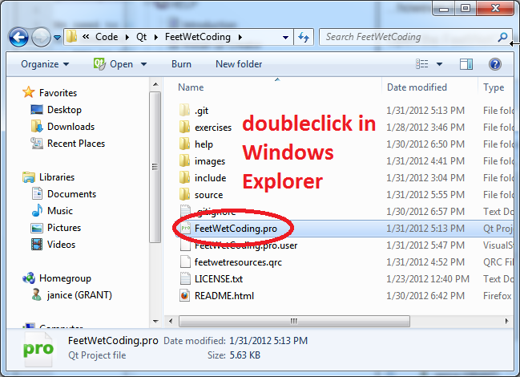
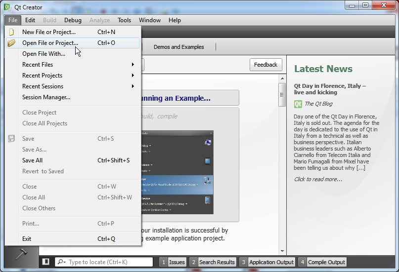
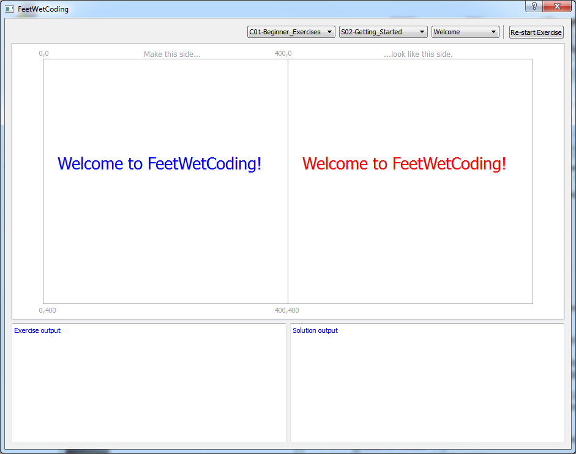
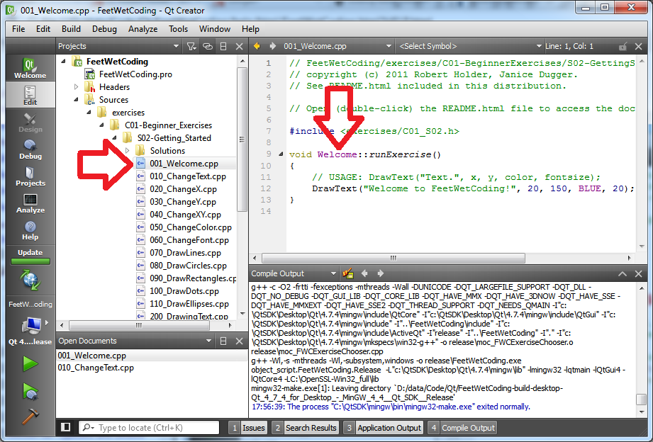
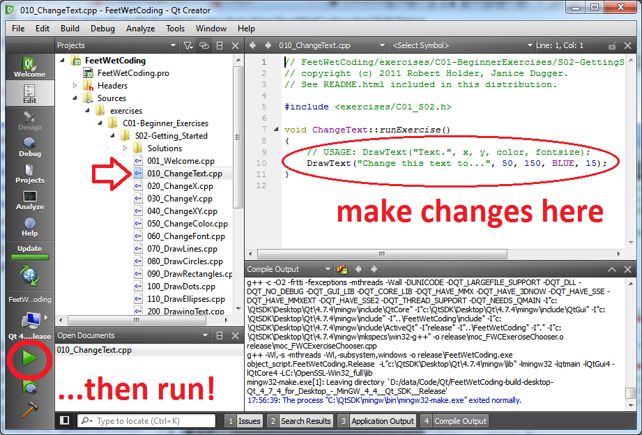
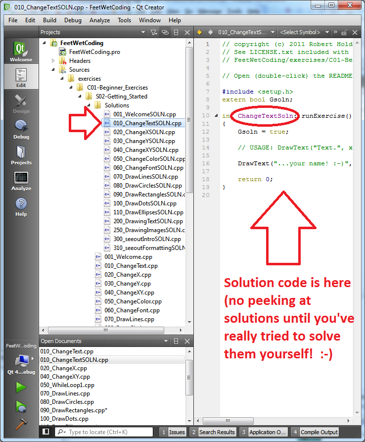

How to use FeetWetCoding
You edit the code for the exercise you want to work on within the Qt Creator IDE. Then you run it by clicking the green "run" arrow in Qt Creator, and selecting the exercise you want from the Chooser dropdowns to see if you have achieved the solution. If not, close FeetWetCoding.exe (not Qt Creator), make the changes you want in the exercise code you are working on, and re-run it to see if you got it right!
When you run your program on Windows, and then edit the source, don't forget to close the running version before you try to run it again!
...if you see this error when you try to run your program:
:-1: error: cannot open output file debug\FeetWetCoding.exe: Permission denied
...it probably means you still have the program running from the last time you ran it. Close it (the FeetWetCoding.exe program, not Qt Creator) and try again.
Give the above instructions a try, and if you get confused or stuck, more detailed instructions with screenshots are listed below.
Detailed Instructions
If you haven't already, open the FeetWetCoding project in Qt Creator by clicking on the FeetWetCoding.pro file:

...you can also start Qt Creator from the Start Menu and navigate to the FeetWetCoding.pro file that way with "File > Open File or Project..."

...but I find it easier to just find the .pro file in Windows Explorer and double-click on it.
If you can't find where you unzipped the project, you can open Windows Explorer or Firefox and open the Downloads window to find the zip file, and just unzip it again into a directory (folder) of your choosing.
Once you have the FeetWetCoding project open in Qt Creator, click the green "Run" arrow button. Qt Creator will "build" and then run the FeetWetCoding program.

This may take awhile, but eventually the build should finish and the program should run. The first time you run FeetWetCoding, when the program runs and pops up in a new window, it should look like this:

The first exercise, "001_Welcome.cpp" is located here:

Notice that "001_Welcome.cpp" is the exercise filename. When we talk about the exercise name, we're talking about "Welcome" because that's the "class name" that you will select in the Chooser dropdowns when FeetWetCoding.exe is running.
The exercises for each chapter are located in their respective Chapter folder. Each exercise also has a "solution" counterpart, which is the original exercise name with the characters "SOLN" after it, which are located in the "Solutions" directory for each exercise section. So the "solution" for the first exercise is called "001_WelcomeSOLN.cpp" and is located here:

Now let's move on to the next exercise, ChangeText which is in 010_ChangeText.cpp. Make your changes to the ChangeText exercise in the file 010_ChangeText.cpp:

The idea for doing exercises in FeetWetCoding is that you work on one exercise, and try to accomplish the goal of that exercise, and then if you get stuck, or if you finish the exercise, you can compare your code to what is in the "<exercise name>SOLN.cpp" file.
Click the green run arrow to build and run. When you've got it changed (this is a pretty easy exercise), check the solution in Solutions/010_ChangeTextSOLN.cpp:

As you work through the exercises, this is the basic process you will use. Just open the 020_ChangeX.cpp (or whatever the next one is named), work on it, check the solution in 020_ChangeXSOLN.cpp, and then move on!
When you are done looking at the running program, don't forget to click the 'X' of the window of the running program to close it before you try to run it with any changes you've made! Once your program is running, if you make any changes to its code in Qt Creator, the green "start" arrow button will not work properly again until you first close the program that is already running. This will come up in your future: I do it all the time!
So, to repeat, this process works:
1. Edit your program.
2. Run your program.
3. Close your program window (NOT the Qt Creator window!)
4. Go back to step 1.
...but this process does NOT work:
1. Edit your program.
2. Run your program.
3. Try to go back to step 1 without first closing your running program.
When you forget to close the running program, and then you edit it and try to run it again, you will get this error in the Issues pane of the Qt Creator window:
:-1: error: cannot open output file debug\FeetWetCoding.exe: Permission denied
TIP: This is almost guaranteed to happen to you in the future, so if you changed something in your program and suddenly it won't run at all, this is the first thing you need to check: did you forget to close the running program before making new changes?
We welcome feedback on the exercises! Please contact us with your feedback.
Now you are familiar with the basic process of how to work with the individual exercises in FeetWetCoding. Each exercise is also discussed in this documentation. You are now ready to get started on the Exercises!
If you mangle an exercise and just can't get FeetWetCoding to build at all, you can always download it again from Github. If you do, remember to unzip it in a different directory (folder) than where you already have FeetWetCoding, or you will overwrite all the exercises you have already completed!
Note: As you may have noticed, Qt Creator has a number of different views, including, "Edit", "Debug", "Projects", "Analyze" and "Help." You will be spending most of your time while learning to write C++ code in the "Edit" view.
TIP: If you ever find yourself trying to see your code, and you do not see it on the right hand side of the screen, make sure you are in the "Edit" view by clicking on the "Edit" icon on the left side of Qt Creator. Sometimes you will be editing code, and then you will change the view, and won't be able to see your code. Clicking on "Edit" should fix it, and your code should be viewable again.
documentation generated by HelpNDoc 3/26/2012 11:00 AM
FeetWetCoding version 0.2.2 released 2012Mar24 copyright (c) 2011,2012 Robert Holder, Janice Dugger.
...click the ZIP button on our Github page for the latest source!
Created with the Personal Edition of HelpNDoc: Easily create Web Help sites